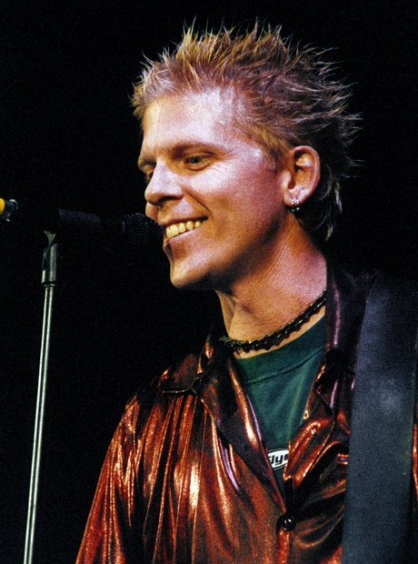
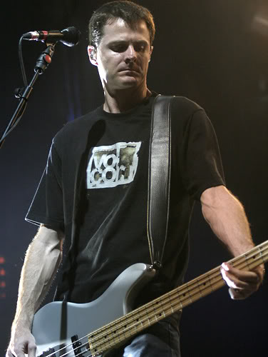
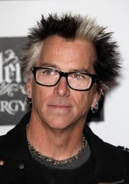
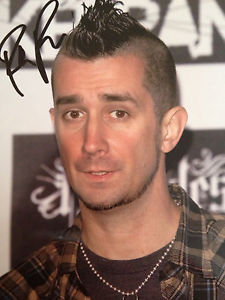
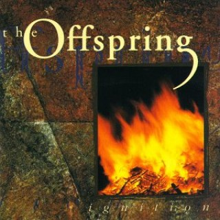
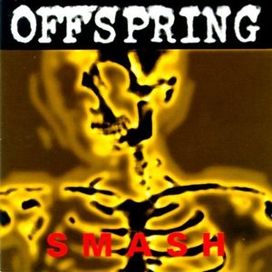
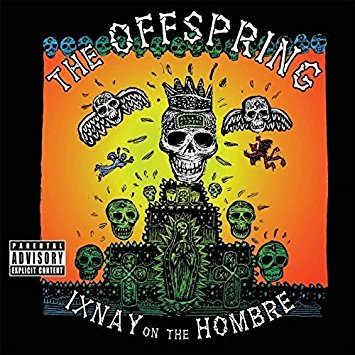
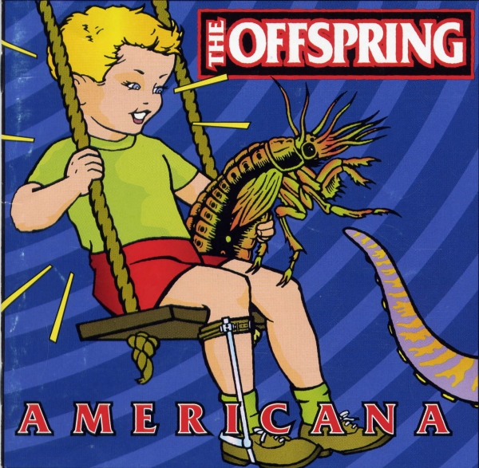
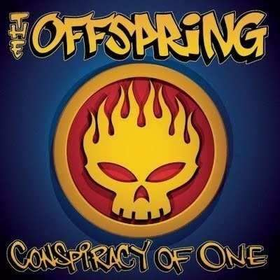

The Offspring (também conhecida simplesmente como Offspring) é uma banda de punk rock dos Estados Unidos formada em 1984 na cidade de Huntington Beach, Califórnia.Seus membros atuais são: Dexter Holland (vocal e guitarra rítmica), Greg K. (baixo e vocal de apoio), Kevin "Noodles" Wasserman (guitarra líder e vocal de apoio) e Pete Parada (bateria). Vale ressaltar que o Offspring detém duas marcas históricas: O álbum de estúdio Smash é o mais vendido de todos os tempos por uma gravadora independente e "Pretty Fly (for a White Guy)", a canção mais baixada da história da Internet. Sobre as influências, o grupo citou as bandas: The Adolescents, Bad Religion, Channel 3, Dead Kennedys, Descendents, The Dickies, Ramones, Sex Pistols, Social Distortion, TSOL e The Vandals.
| Foto | Nome | Nascimento | Instrumentos |
|---|---|---|---|
|  | |||
|  | |||
|  | |||
|  |
Discografia do The Offspring
| Capa | Nome | Ano de lançamento |
|---|---|---|
|
||
|  | ||
|  | ||
|  | ||
|  | ||
|  | ||
|
The Offspring na Wikipedia
Voltar ao topo da pagina